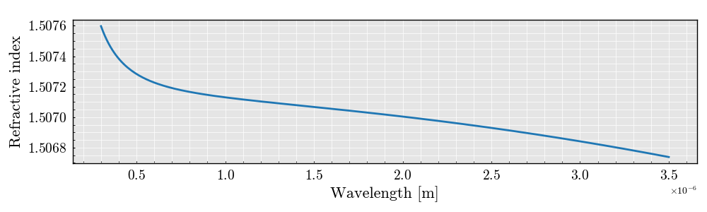

Note
Go to the end to download the full example code
Plot refractive index of material: BK7#

SceneList(unit_size=(10, 3), tight_layout=True, transparent_background=False, title='', padding=1.0, axis_list=[Axis(row=0, col=0, x_label='Wavelength [m]', y_label='Refractive index', title='', show_grid=True, show_legend=False, legend_position='best', x_scale='linear', y_scale='linear', x_limits=None, y_limits=None, equal_limits=False, projection=None, font_size=16, tick_size=14, y_tick_position='left', x_tick_position='bottom', show_ticks=True, show_colorbar=None, legend_font_size=14, line_width=None, line_style=None, x_scale_factor=None, y_scale_factor=None, aspect_ratio='auto', _artist_list=[Line(y=array([1.507597 , 1.50756408, 1.50753437, 1.50750747, 1.50748303,
1.50746076, 1.5074404 , 1.50742173, 1.50740457, 1.50738877,
1.50737416, 1.50736064, 1.5073481 , 1.50733643, 1.50732556,
1.50731541, 1.50730592, 1.50729703, 1.50728869, 1.50728084,
1.50727346, 1.50726649, 1.50725991, 1.50725368, 1.50724779,
1.50724219, 1.50723688, 1.50723182, 1.50722701, 1.50722242,
1.50721804, 1.50721385, 1.50720984, 1.50720599, 1.50720231,
1.50719877, 1.50719537, 1.50719209, 1.50718894, 1.50718589,
1.50718295, 1.50718012, 1.50717737, 1.50717471, 1.50717213,
1.50716963, 1.50716721, 1.50716485, 1.50716255, 1.50716032,
1.50715814, 1.50715602, 1.50715395, 1.50715193, 1.50714995,
1.50714801, 1.50714612, 1.50714426, 1.50714244, 1.50714066,
1.5071389 , 1.50713718, 1.50713549, 1.50713382, 1.50713218,
1.50713056, 1.50712897, 1.5071274 , 1.50712585, 1.50712432,
1.5071228 , 1.50712131, 1.50711983, 1.50711837, 1.50711692,
1.50711548, 1.50711406, 1.50711265, 1.50711125, 1.50710986,
1.50710849, 1.50710712, 1.50710576, 1.50710441, 1.50710306,
1.50710173, 1.5071004 , 1.50709908, 1.50709776, 1.50709645,
1.50709514, 1.50709384, 1.50709254, 1.50709124, 1.50708995,
1.50708867, 1.50708738, 1.5070861 , 1.50708482, 1.50708354,
1.50708226, 1.50708098, 1.50707971, 1.50707843, 1.50707716,
1.50707588, 1.50707461, 1.50707334, 1.50707206, 1.50707079,
1.50706951, 1.50706824, 1.50706696, 1.50706568, 1.5070644 ,
1.50706312, 1.50706183, 1.50706055, 1.50705926, 1.50705797,
1.50705668, 1.50705538, 1.50705409, 1.50705279, 1.50705148,
1.50705018, 1.50704887, 1.50704756, 1.50704624, 1.50704493,
1.5070436 , 1.50704228, 1.50704095, 1.50703962, 1.50703828,
1.50703694, 1.5070356 , 1.50703425, 1.50703289, 1.50703154,
1.50703018, 1.50702881, 1.50702744, 1.50702607, 1.50702469,
1.50702331, 1.50702192, 1.50702052, 1.50701913, 1.50701773,
1.50701632, 1.50701491, 1.50701349, 1.50701207, 1.50701064,
1.50700921, 1.50700777, 1.50700633, 1.50700488, 1.50700343,
1.50700197, 1.5070005 , 1.50699904, 1.50699756, 1.50699608,
1.50699459, 1.5069931 , 1.50699161, 1.5069901 , 1.5069886 ,
1.50698708, 1.50698556, 1.50698404, 1.50698251, 1.50698097,
1.50697943, 1.50697788, 1.50697633, 1.50697477, 1.5069732 ,
1.50697163, 1.50697005, 1.50696847, 1.50696688, 1.50696528,
1.50696368, 1.50696207, 1.50696045, 1.50695883, 1.50695721,
1.50695557, 1.50695394, 1.50695229, 1.50695064, 1.50694898,
1.50694732, 1.50694565, 1.50694397, 1.50694229, 1.5069406 ,
1.5069389 , 1.5069372 , 1.50693549, 1.50693378, 1.50693206,
1.50693033, 1.5069286 , 1.50692686, 1.50692511, 1.50692336,
1.5069216 , 1.50691983, 1.50691806, 1.50691628, 1.5069145 ,
1.5069127 , 1.50691091, 1.5069091 , 1.50690729, 1.50690547,
1.50690365, 1.50690182, 1.50689998, 1.50689813, 1.50689628,
1.50689442, 1.50689256, 1.50689069, 1.50688881, 1.50688693,
1.50688503, 1.50688314, 1.50688123, 1.50687932, 1.5068774 ,
1.50687548, 1.50687355, 1.50687161, 1.50686966, 1.50686771,
1.50686575, 1.50686379, 1.50686182, 1.50685984, 1.50685785,
1.50685586, 1.50685386, 1.50685186, 1.50684984, 1.50684782,
1.5068458 , 1.50684376, 1.50684172, 1.50683968, 1.50683762,
1.50683556, 1.5068335 , 1.50683142, 1.50682934, 1.50682725,
1.50682516, 1.50682306, 1.50682095, 1.50681883, 1.50681671,
1.50681458, 1.50681245, 1.5068103 , 1.50680815, 1.506806 ,
1.50680383, 1.50680166, 1.50679949, 1.5067973 , 1.50679511,
1.50679291, 1.50679071, 1.50678849, 1.50678628, 1.50678405,
1.50678182, 1.50677958, 1.50677733, 1.50677508, 1.50677281,
1.50677055, 1.50676827, 1.50676599, 1.5067637 , 1.50676141,
1.5067591 , 1.50675679, 1.50675448, 1.50675215, 1.50674982,
1.50674748, 1.50674514, 1.50674279, 1.50674043, 1.50673806]), x=array([3.00000000e-07, 3.10702341e-07, 3.21404682e-07, 3.32107023e-07,
3.42809365e-07, 3.53511706e-07, 3.64214047e-07, 3.74916388e-07,
3.85618729e-07, 3.96321070e-07, 4.07023411e-07, 4.17725753e-07,
4.28428094e-07, 4.39130435e-07, 4.49832776e-07, 4.60535117e-07,
4.71237458e-07, 4.81939799e-07, 4.92642140e-07, 5.03344482e-07,
5.14046823e-07, 5.24749164e-07, 5.35451505e-07, 5.46153846e-07,
5.56856187e-07, 5.67558528e-07, 5.78260870e-07, 5.88963211e-07,
5.99665552e-07, 6.10367893e-07, 6.21070234e-07, 6.31772575e-07,
6.42474916e-07, 6.53177258e-07, 6.63879599e-07, 6.74581940e-07,
6.85284281e-07, 6.95986622e-07, 7.06688963e-07, 7.17391304e-07,
7.28093645e-07, 7.38795987e-07, 7.49498328e-07, 7.60200669e-07,
7.70903010e-07, 7.81605351e-07, 7.92307692e-07, 8.03010033e-07,
8.13712375e-07, 8.24414716e-07, 8.35117057e-07, 8.45819398e-07,
8.56521739e-07, 8.67224080e-07, 8.77926421e-07, 8.88628763e-07,
8.99331104e-07, 9.10033445e-07, 9.20735786e-07, 9.31438127e-07,
9.42140468e-07, 9.52842809e-07, 9.63545151e-07, 9.74247492e-07,
9.84949833e-07, 9.95652174e-07, 1.00635452e-06, 1.01705686e-06,
1.02775920e-06, 1.03846154e-06, 1.04916388e-06, 1.05986622e-06,
1.07056856e-06, 1.08127090e-06, 1.09197324e-06, 1.10267559e-06,
1.11337793e-06, 1.12408027e-06, 1.13478261e-06, 1.14548495e-06,
1.15618729e-06, 1.16688963e-06, 1.17759197e-06, 1.18829431e-06,
1.19899666e-06, 1.20969900e-06, 1.22040134e-06, 1.23110368e-06,
1.24180602e-06, 1.25250836e-06, 1.26321070e-06, 1.27391304e-06,
1.28461538e-06, 1.29531773e-06, 1.30602007e-06, 1.31672241e-06,
1.32742475e-06, 1.33812709e-06, 1.34882943e-06, 1.35953177e-06,
1.37023411e-06, 1.38093645e-06, 1.39163880e-06, 1.40234114e-06,
1.41304348e-06, 1.42374582e-06, 1.43444816e-06, 1.44515050e-06,
1.45585284e-06, 1.46655518e-06, 1.47725753e-06, 1.48795987e-06,
1.49866221e-06, 1.50936455e-06, 1.52006689e-06, 1.53076923e-06,
1.54147157e-06, 1.55217391e-06, 1.56287625e-06, 1.57357860e-06,
1.58428094e-06, 1.59498328e-06, 1.60568562e-06, 1.61638796e-06,
1.62709030e-06, 1.63779264e-06, 1.64849498e-06, 1.65919732e-06,
1.66989967e-06, 1.68060201e-06, 1.69130435e-06, 1.70200669e-06,
1.71270903e-06, 1.72341137e-06, 1.73411371e-06, 1.74481605e-06,
1.75551839e-06, 1.76622074e-06, 1.77692308e-06, 1.78762542e-06,
1.79832776e-06, 1.80903010e-06, 1.81973244e-06, 1.83043478e-06,
1.84113712e-06, 1.85183946e-06, 1.86254181e-06, 1.87324415e-06,
1.88394649e-06, 1.89464883e-06, 1.90535117e-06, 1.91605351e-06,
1.92675585e-06, 1.93745819e-06, 1.94816054e-06, 1.95886288e-06,
1.96956522e-06, 1.98026756e-06, 1.99096990e-06, 2.00167224e-06,
2.01237458e-06, 2.02307692e-06, 2.03377926e-06, 2.04448161e-06,
2.05518395e-06, 2.06588629e-06, 2.07658863e-06, 2.08729097e-06,
2.09799331e-06, 2.10869565e-06, 2.11939799e-06, 2.13010033e-06,
2.14080268e-06, 2.15150502e-06, 2.16220736e-06, 2.17290970e-06,
2.18361204e-06, 2.19431438e-06, 2.20501672e-06, 2.21571906e-06,
2.22642140e-06, 2.23712375e-06, 2.24782609e-06, 2.25852843e-06,
2.26923077e-06, 2.27993311e-06, 2.29063545e-06, 2.30133779e-06,
2.31204013e-06, 2.32274247e-06, 2.33344482e-06, 2.34414716e-06,
2.35484950e-06, 2.36555184e-06, 2.37625418e-06, 2.38695652e-06,
2.39765886e-06, 2.40836120e-06, 2.41906355e-06, 2.42976589e-06,
2.44046823e-06, 2.45117057e-06, 2.46187291e-06, 2.47257525e-06,
2.48327759e-06, 2.49397993e-06, 2.50468227e-06, 2.51538462e-06,
2.52608696e-06, 2.53678930e-06, 2.54749164e-06, 2.55819398e-06,
2.56889632e-06, 2.57959866e-06, 2.59030100e-06, 2.60100334e-06,
2.61170569e-06, 2.62240803e-06, 2.63311037e-06, 2.64381271e-06,
2.65451505e-06, 2.66521739e-06, 2.67591973e-06, 2.68662207e-06,
2.69732441e-06, 2.70802676e-06, 2.71872910e-06, 2.72943144e-06,
2.74013378e-06, 2.75083612e-06, 2.76153846e-06, 2.77224080e-06,
2.78294314e-06, 2.79364548e-06, 2.80434783e-06, 2.81505017e-06,
2.82575251e-06, 2.83645485e-06, 2.84715719e-06, 2.85785953e-06,
2.86856187e-06, 2.87926421e-06, 2.88996656e-06, 2.90066890e-06,
2.91137124e-06, 2.92207358e-06, 2.93277592e-06, 2.94347826e-06,
2.95418060e-06, 2.96488294e-06, 2.97558528e-06, 2.98628763e-06,
2.99698997e-06, 3.00769231e-06, 3.01839465e-06, 3.02909699e-06,
3.03979933e-06, 3.05050167e-06, 3.06120401e-06, 3.07190635e-06,
3.08260870e-06, 3.09331104e-06, 3.10401338e-06, 3.11471572e-06,
3.12541806e-06, 3.13612040e-06, 3.14682274e-06, 3.15752508e-06,
3.16822742e-06, 3.17892977e-06, 3.18963211e-06, 3.20033445e-06,
3.21103679e-06, 3.22173913e-06, 3.23244147e-06, 3.24314381e-06,
3.25384615e-06, 3.26454849e-06, 3.27525084e-06, 3.28595318e-06,
3.29665552e-06, 3.30735786e-06, 3.31806020e-06, 3.32876254e-06,
3.33946488e-06, 3.35016722e-06, 3.36086957e-06, 3.37157191e-06,
3.38227425e-06, 3.39297659e-06, 3.40367893e-06, 3.41438127e-06,
3.42508361e-06, 3.43578595e-06, 3.44648829e-06, 3.45719064e-06,
3.46789298e-06, 3.47859532e-06, 3.48929766e-06, 3.50000000e-06]), label=None, color=None, line_style='-', line_width=2, x_scale_factor=1, y_scale_factor=1, layer_position=1)], mpl_ax=<Axes: xlabel='Wavelength [m]', ylabel='Refractive index'>, colorbar=Colorbar(artist=None, discreet=False, position='right', colormap=<matplotlib.colors.LinearSegmentedColormap object at 0x12423ce50>, orientation='vertical', symmetric=False, log_norm=False, numeric_format=None, n_ticks=None, label_size=None, width='10%', padding=0.1, norm=None, label=''))], _mpl_figure=<Figure size 1000x300 with 1 Axes>, mpl_axis_generated=False, axis_generated=True, ax_orientation='vertical')
import numpy
from PyOptik import Sellmeier
material = Sellmeier('BK7')
RI = material.get_refractive_index(wavelength=[1310e-9, 1550e-9])
figure = material.plot(
wavelength_range=numpy.linspace(300e-9, 3500e-9, 300)
)
figure.show()
Total running time of the script: (0 minutes 0.150 seconds)